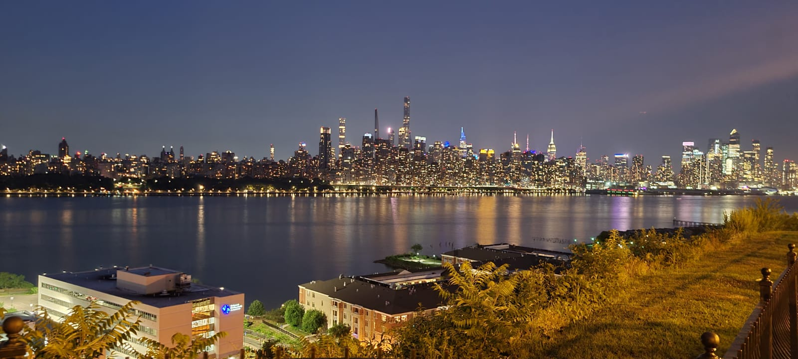
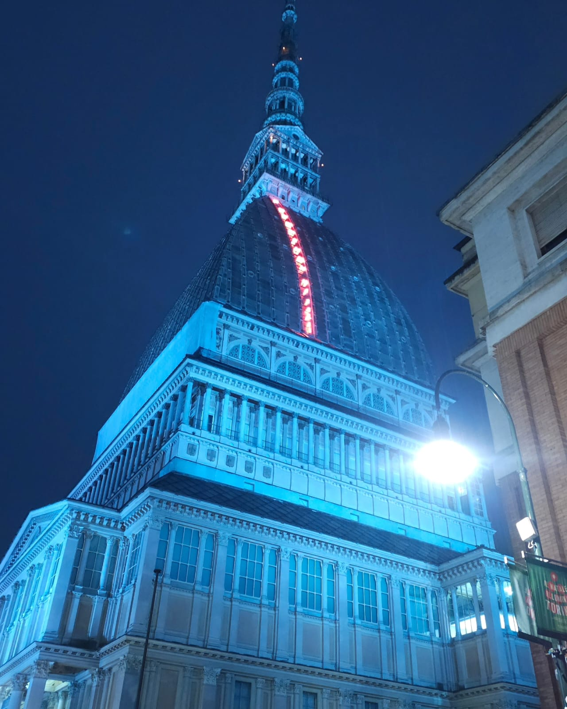

New York
Es la ciudad más poblada de los Estados Unidos y una de las más pobladas e importantes del mundo, con un área urbana de veinticuatro millones de habitantes.
Desde finales del siglo xix es uno de los centros de la política y la economía mundial, albergando la sede de la Organización de las Naciones Unidas y de numerosas empresas e instituciones financieras de importancia global.
Nueva York ejerce influencia a escala global en los medios de comunicación, la política, la educación, la arquitectura, el entretenimiento, las artes y la moda.
Por todo ello, se considera una de las ciudades más globalizadas del planeta, con una gran diversidad cultural.
Santa Marta
Es conocida por sus actividades turísticas, la historia de sus calles y sus playas.
El balneario El Rodadero es uno de los principales destinos del Caribe colombiano. Su casco urbano se encuentra entre la Sierra Nevada de Santa Marta y el mar Caribe, y el parque Tayrona se encuentra bajo su jurisdicción.
Entre sus atracciones culturales e históricas están la Casa de la Aduana, la Catedral Basílica, la Biblioteca Banco de la República, el Seminario San Juan Nepomuceno, el Paseo Bastidas, la Quinta de San Pedro Alejandrino, la plaza de Bolívar y el parque Los Novios.Su núcleo más poblado y de mayor actividad comercial es la zona central, desde donde se desarrolló la ciudad a partir del siglo xvii. El plano comprendido entre la carrera Primera y las avenidas Santa Rita y del Ferrocarril enmarca su centro histórico y su núcleo comercial, encontrándose además su núcleo de turismo de playa en la zona de El Rodadero.
Santa Marta es conocida por haber sido el lugar en el que Simón Bolívar falleció en 1830 en la Quinta de San Pedro Alejandrino, en esa época a las afueras de la ciudad.

Turin
Turín es frecuentemente llamada la Cuna de la libertad italiana por ser el lugar de nacimiento de importantes políticos que contribuyeron con la unificación de Italia, como Cavour. La ciudad actualmente alberga la Universidad de Turín, de seis siglos de antigüedad, y el Politécnico de Turín. También se encuentran en la ciudad museos como la Galleria Sabauda, el Museo Egipcio de Turín (el más antiguo en el mundo y considerado el segundo más importante en el mundo después de El Cairo por valor de los hallazgos) y la Mole Antonelliana. En 2008 fue la décima ciudad más visitada de Italia.
La ciudad solía ser un importante centro político europeo, siendo la primera capital de Italia en 1861 y la ciudad de residencia de la Casa de Saboya, la familia real de Italia.6 A pesar de que mucho de su influencia política se había perdido cuando comenzó la Segunda Guerra Mundial, a pesar de haber sido un centro de movimientos antifascistas durante el Ventennio incluyendo a la resistencia italiana, se convirtió en uno de los principales centros industriales y comerciales de Europa, y actualmente es una de las ciudades más industrializadas de Italia, formando junto con Milán y Génova el "triángulo industrial" del país. Turín es la tercera ciudad más rica de Italia, tras Roma y Milán.7 Con un producto interno bruto de 58 000 millones de dólares, Turín es la ciudad número 78 en la lista de las más ricas del mundo por su poder adquisitivo.
Turín es también la sede de gran parte de la potente industria automovilística italiana.